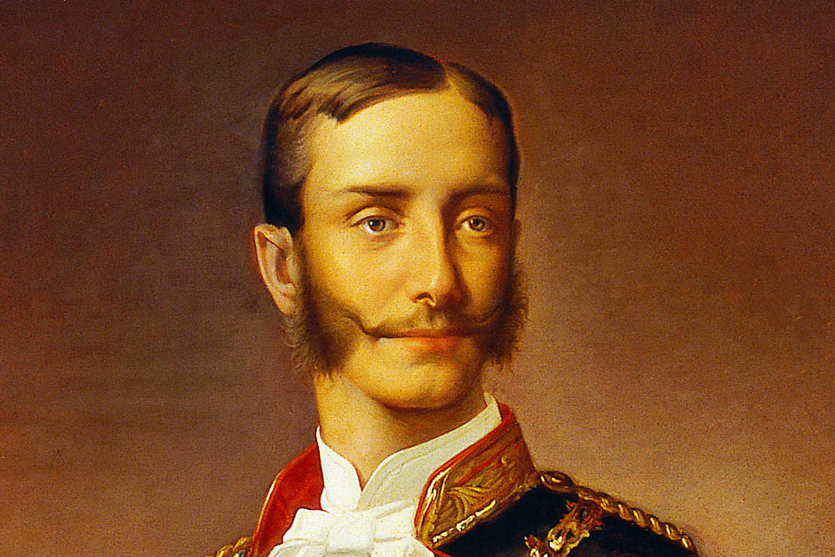

Constitución de 1876
En un clima de abierto enfrentamiento político, el Rey se vio forzado a renunciar a la Corona en 1873, lo que determinó que las Cortes instaurasen la República. Se elaboró entonces un nuevo proyecto de Constitución que, además de la forma republicana, configuraba un Estado federal. El desarrollo de los acontecimientos –con la sucesión de cuatro presidentes en menos de un año- acabó con un golpe militar a principios de 1874, la abolición de la República y la proclamación de Alfonso XII como nuevo Rey. Se inició entonces un nuevo periodo conservador bajo la guía del político Cánovas del Castillo. Convocadas Cortes constituyentes elegidas mediante sufragio universal, se aprobó la Constitución de 1876 que estuvo vigente hasta 1923. Consistió en un texto breve, de inspiración conservadora, en el que se volvía a la concepción del poder constituyente compartido entre el Rey y la Nación. Se indicó una declaración de derechos, pero más restringida que en la Constitución de 1869. El Senado volvió a tener un perfil aristocrático: había Senadores por derecho propio, otros designados por el Rey y otros elegidos por las corporaciones del Estado. Por su parte, la elección del Congreso se remitía a lo que estableciese una ley. Y esto buscará que fue de elección restringida hasta 1890 y por sufragio universal masculino a entonces.

https://www.senado.es/web/conocersenado/senadohistoria/senado18341923/Constitucion1876/index.html
Comprueba tus saberes:
https://www.websaber.es/constitucion/anteriores/tests/test_constitucion_espanola_1869_1.htm